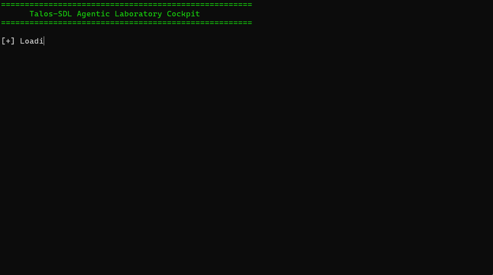

Talos-SDL is a framework that makes interacting with scientific hardware feel like collaborating with a laboratory technician.

Talos-SDL converts human intent into deterministic JSON schema, bridging the gap between scientific thought and instrument action.
Safety and precision are maintained through a mandatory Review-and-Confirm cycle, allowing scientists to audit AI plans before execution.
Talos identifies every connected device at startup and automatically coordinates complex, multi-hardware workflows.
When hardware fails, Talos doesn't just stop; it captures the diagnostic data and uses it to help the scientist recover the experiment.
By leveraging LLM reasoning, Talos understands abstract instructions by referencing previous experiment data.